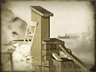

Requires
- Buildings: 
Basic Building Statistics (can be modified by difficulty level, arts, skills, traits and retainers)
- Cost: 9000
- +1500 to wealth generated by mines in this province
Description
Silver armour can stop any bullet.
Silver mining can be enormously profitable, and additional investment in this province will bring in extra, taxable income. Silver can be found as nuggets or, as it is reactive and unlike gold, as compounds with other elements. It is also a by-product of other kinds of mining, either from the tailings or because silver is often found in the same rock strata. This can make silver mining or recovery a hazardous business for the workers, as lead or arsenic poisoning are horrible ways to die. Nevertheless, silver is an attractive metal, and has been long valued and used by people as coinage and jewellery. It has also had medical uses, both for instruments and as a treatment for a variety of complaints. Before the arrival of modern antibiotics, it was recognised that silver could treat some infections; this is because the metal is toxic to some microbes and fungi. The medical benefits, though, are entirely outweighed by its use as treasure.